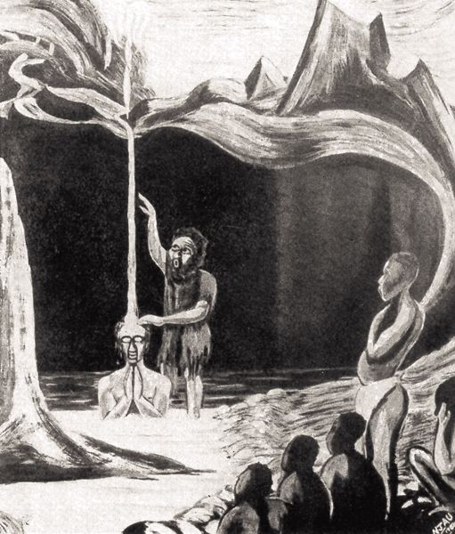
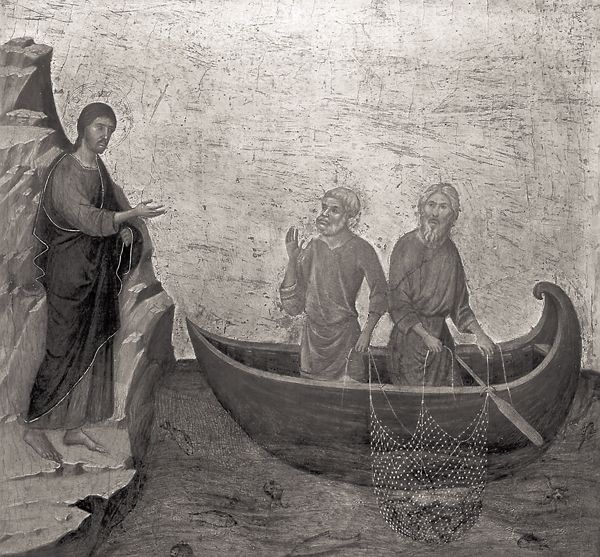
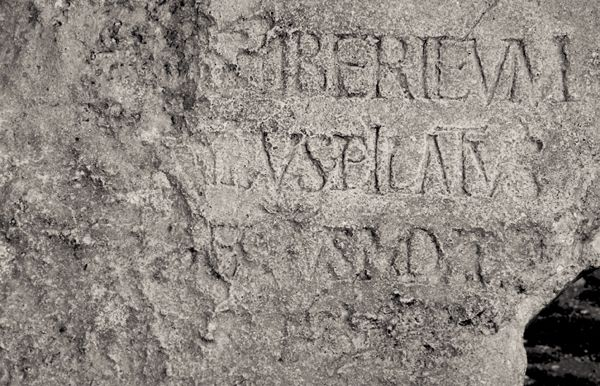
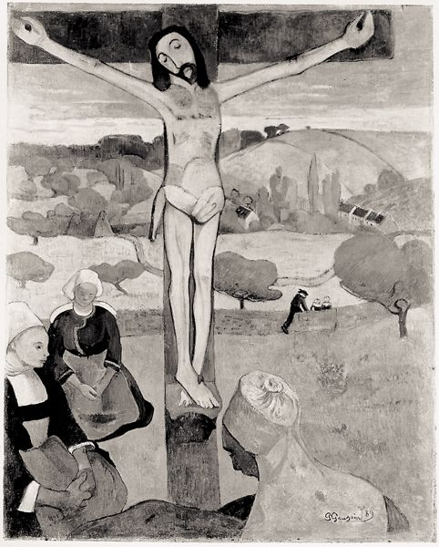

8.1. THE QUEST OF THE HISTORICAL JESUS
The canonical Gospels of the NT present four portraits of Jesus, each painted with different pigments, in a different style, and from a particular perspective. Quite clearly the subject of the portraits is the same, but no two portraits are identical. A recognition of the differences among the Gospels has fueled intense interest in getting behind each portrait to discover the subject himself. In the field of NT studies, the attempts to use the Gospels and other traditions about Jesus to reconstruct a picture of their subject, Jesus of Nazareth, is known as “the quest of the historical Jesus” (see chapter 3).
Much ink has been spilled over the validity of the enterprise and the appropriate methods for undertaking it. The debate over the validity of the quest in no way calls into question the historicity of Jesus himself. Ancient sources, Christian, pagan, and Jewish, testify to his existence. Rather, the recognition that each Evangelist chooses to give us Jesus from a particular perspective has led scholars to doubt the wisdom, as well as the possibility, of searching for a Jesus “behind” the Gospels themselves. The Jesus recovered in this way would never be identical with the Jesus portrayed by any one Gospel. Instead, that Jesus would always be the product of historical reconstruction and of the best judgments of historians. In a sense, the reconstructed portrait of Jesus amounts to a fifth portrait of Jesus alongside the other four. And it is these four Gospels that, of all the possible choices, have found a place in the church’s Scripture, and are thus its normative witness to Jesus of Nazareth.
Still, much insight can be gained into the mission and message of Jesus when they are set in their historical contexts. For example, while the Gospels present Jesus as teaching often about the kingdom of God, no Gospel actually includes an explanation of what “kingdom of God” might have denoted or connoted to a first-century Jewish audience. As historians place Jesus’ teaching about the kingdom into the sociohistorical context of first-century Judaism, the contours of Jesus’ own proclamation of the kingdom emerge from the shadows and become more sharply defined. Or, again, various prophetic figures and renewal movements referred to in Josephus’s writings show how Jesus might have been interpreted and understood and what might have led to resistance and opposition to Jesus. Many aspects of his life and message gain texture and depth when they are seen in historical context. Even if the portrait of Jesus resulting from historical study can never have the same authority as the canonical portraits for the proclamation and witness of the church, and even if historians can only speak of their results in terms of probabilities, nevertheless, we can repeatedly illumine Jesus’ mission and message by placing them in the cultural context of first-century Judaism. Those portraits that have been most compelling have at the same time been able to locate Jesus most convincingly within his first-century context.
In order to suggest how one might proceed to sketch a portrait of the historical Jesus from the Gospels, the following guidelines may be briefly set out.
(1) The Gospels of the NT are our primary and most important source for what we know about Jesus. Passing references in Jewish and pagan literature do not add substantially to our knowledge about Jesus. The Gospel of Thomas, which is sometimes claimed to supply additional information or an alternative and equally valid historical portrait of Jesus, is of secondary value as a historical source because of its date, its dependence on the Synoptic tradition, and its obviously Gnostic interpretation of Jesus.
(2) The primary historical context for understanding Jesus is first-century Palestinian Judaism. Jesus’ actions and words and responses to him must be explained from within this context. We will especially need to know well the context of Jesus’ native faith and home when we speak of his distinctiveness, that is, when we claim that his activity differs from, challenges, or runs counter to the common wisdom of his day.
(3) While Jesus’ actions and words should be interpreted from within their context in first-century Judaism, they must also be interpreted in such a way as to explain credibly the rise of the early church. This is not to claim that there are no theological developments within the early Christian community, but only that one expects to find discernible lines of continuity from Jesus to the church.
(4) Any reconstruction of Jesus’ life must endeavor to account for what is surely the most certain thing about him: he was crucified by the Romans. The significance of crucifixion itself, as well as the fact that he died at the hands of the Roman government, provides a critical vantage point for understanding the content and implications of Jesus’ teaching and actions.
(5) Similarly, a historical reconstruction of Jesus will be deemed the more credible the more it can explain. To sketch a historical portrait of Jesus entails more than merely explaining various parts of his ministry, such as his miracles or proclamation of the kingdom of God, in their historical contexts. Rather, a historical reconstruction tries to account for the significance and relationship of the various elements of Jesus’ life and ministry to each other.
(6) Finally, the whole is greater than the sum of its parts. Study of the historical Jesus has gotten bogged down in recent years over the issues of determining the authenticity of particular traditions in the Gospels. But those studies that have been most interesting and fruitful in recent years have not followed the approach of deciding the authenticity of every bit of material first. Rather, they have sought to advance an encompassing hypothesis about Jesus’ mission and message which has endeavored to do justice to the Gospels’ portraits of Jesus. Put another way, while in the past the goal of studies of the historical Jesus seems to have been to pare the Gospels down to the bare minimum, in more recent efforts the goal of studies about Jesus seems to have been to try to demonstrate how much we can know with a fair degree of confidence. Thus recent studies of Jesus have not been content with offering a rough sketch of the subject, but have tried to fill in the textures, shadows, and richness of detail and color to yield a powerful and evocative portrait of Jesus of Nazareth.
8.2. THE BEGINNING OF JESUS’ PUBLIC MINISTRY
8.2.1. The Ministry of John the Baptist
According to all the Gospels, Jesus’ public ministry began with his baptism by John at the Jordan (Matt 3:13–17; Mark 1:9–11; Luke 3:21–22; John 1:29–34; Acts 1:22; 10:37). Since the Gospels report almost nothing of Jesus’ activities prior to this time — except his birth and a family pilgrimage to Jerusalem (Luke 2:41–52) — one cannot reconstruct Jesus’ early years, his childhood, development, education, and so on. The numerous so-called apocryphal gospels, which were not included in the NT canon, include numerous fanciful tales about Jesus as a boy. In those gospels, Jesus exhibits magical and miraculous powers that have but distant parallels in the NT Gospels. Among other feats, he turns clay pigeons into live birds, lengthens a board that Joseph mistakenly cut too short, carries water for Mary in a piece of cloth, curses — thus putting to death! — playmates who annoy him, and refuses to learn his lessons from various teachers. The NT Gospels do not indulge in such speculation but begin their accounts of Jesus’ ministry and teaching subsequent to his baptism by John. Yet the very fact that Jesus emerges on the public scene only with the ministry of John suggests that we may learn something of the contours of Jesus’ ministry by examining the Gospel accounts of the Baptist’s proclamation and activity.
John carried out his activity “in the wilderness” (Matt 3:1; Mark 1:4; Luke 3:2–3), a locale laden with symbolic significance in the Scriptures as pointing to a time of God’s direct provision and guidance (Deut 8:2; Ps 78:13–16; Isa 32:15–17; Jer 2:2–3; Hos 2:14–16). John’s choice of “the wilderness” may echo the prophetic call to “return to the wilderness,” that is, to recover Israel’s dependence on God’s provision and care and to await God’s deliverance. Indeed, other prophetic figures and reform movements of the first century saw the wilderness in such a light. Josephus comments on various Jewish nationalists who promised deliverance, sometimes urging the people to withdraw to the desert and wait for God to deliver Israel from Roman rule (Ant. 20.8.10 §§185–88; J.W. 2.254–65). One figure, Theudas, claimed that he would part the Jordan River (Ant. 20.5.1. §§97–98; Acts 5:36). Josephus describes his own teacher, Bannus, as dwelling “in the wilderness,” living an ascetic lifestyle, and practicing frequent washing (Life 2 §11). The covenant community at Qumran, at the northern tip of the Dead Sea in the Judean wilderness, interpreted its role in terms of Isa 40:3, “In the wilderness prepare the way of the LORD” (1QS 8.12–16; 9.19–20). In short, the wilderness served as the symbol of hope for God’s deliverance, and John called all Israel to repent in preparation for God’s promised salvation.
Such willingness to devote oneself anew to God in anticipation of God’s act of salvation and judgment was to be sealed in the act of baptism (see Ant. 18.116–19). It is difficult to locate precisely the background for John’s baptism. The Levitical code of the OT required washing at various times to purify both men and women, in order to “keep the people of Israel separate from their uncleanness, lest they die in their uncleanness by defiling my tabernacle that is in their midst.” Archaeological excavations have uncovered ritual baths at the temple and in private homes in Jerusalem and Sepphoris dating to the Roman period, pointing to the practice of ritual washing. The community at Qumran practiced repeated and regular washing to remove impurity as part of its communal life. John’s call for a symbolic washing has parallels in its first-century context while at the same time carrying the distinctive note of repentance to allow one to stand in the face of the coming day of God’s judgment. Not all Israel, however, was expected to respond to the call to repentance. Those who did would be gathered as wheat is gathered into a granary and would participate in the fulfillment of the prophetic hope for the renewal and restoration of God’s people.
John spoke of a “stronger one” who would be the agent through whom the Holy Spirit, promised by the OT prophets for a future time of renewal, would be given (Ezek 37:1–10; Joel 2:28–29; Isa 61:1–3; 1QS 4.20–26). Later on John would send his disciples to ask Jesus whether he was truly that “stronger one” (Matt 11:2–3; Luke 7:18–19), to which Jesus responded with an allusion to passages in Isaiah that promise deliverance (Isa 35:5–6; 61:1).
8.2.2. The Baptism of Jesus
Jesus went out into the wilderness to be baptized by John. The fact that we know almost nothing of Jesus’ life prior to his baptism by John suggests that John’s baptismal ministry inaugurated Jesus’ own public work. In their present form, the Gospel accounts present interpreted summaries of Jesus’ identity as the Spirit-endowed Son of God. Through the ministry of the Baptist, Jesus responded to and received confirmation of God’s call to him to undertake his own ministry of proclamation of God’s kingdom.
The importance of John’s ministry for understanding Jesus, and for understanding Jesus’ own understanding of his own mission, is suggested by various passages throughout the Gospels in which Jesus aligns himself with John. Both are agents of God’s call to Israel, both call for repentance, and, although their methods and styles differ, both are ultimately discounted or rejected by their contemporaries (Matt 11:16–19; Luke 7:31–35). Jesus, like John before him, saw Israel standing at the crossroads. Yet Jesus did not remain in the wilderness to undertake his work. Instead, he preached, healed, and taught primarily in the villages and towns of Galilee, with occasional excursions to neighboring regions and towns; he spoke of God’s coming salvation, and he warned of the consequences of failing to heed his call.
Like John, who called Israel to repent and live as the people of God, so too Jesus urged Israel to orient its life fully and completely around the one whom they confessed daily in the words of Scripture: “Hear, O Israel: The LORD is our God, the LORD alone. You shall love the LORD your God with all your heart, with all your soul, and with all your might” (Deut 6:4–5). Jesus later called this the greatest commandment in the law (Matt 22:36–37; Mark 12:29; cf. Luke 10:26–28). He challenged his disciples more than once with similar sharply formulated commands, calling for wholehearted devotion to God and reorientation to God’s will and priorities: “But strive first for the kingdom of God and his righteousness” (Matt 6:33; Luke 12:31). “No one can serve two masters; for a slave will either hate the one and love the other or be devoted to the one and despise the other. You cannot serve God and wealth” (Matt 6:24; Luke 16:13). “The kingdom of heaven is like treasure hidden in a field that someone found and hid; then in his joy he goes and sells all that he has and buys that field” (Matt 13:44). These and other sayings of Jesus illustrate the radical reorientation of one’s life to God to which Jesus called people. In such exhortation, one hears echoes of the preaching of John the Baptist. But it is in Jesus’ proclamation of the kingdom of God and the way in which he speaks of his own role in bringing God’s promise of salvation to Israel that his role and purpose differ from that of John.

Elimo Philipp Njau, The Baptism (Society for the Propagation of the Gospel, London)
Frequently, statements summarizing Jesus’ ministry and teaching in the Gospels combine his preaching and healing ministry under the rubric of “the kingdom of God.” The Gospel of Mark states that Jesus came into Galilee with this message: “The time is fulfilled, the kingdom of God is at hand; repent, and believe the gospel” (Mark 1:15). Elsewhere Jesus moved from one village to the next with the assertion, “I must preach the good news of the kingdom of God to the other cities also; for I was sent for this purpose” (Luke 4:43; Mark 1:38). Parables sometimes begin with the introductory phrase, “The kingdom of God is like. . . .” In other places, Jesus claims to know who may enter the kingdom, and on what terms one may do so. That the kingdom of God formed the heart of Jesus’ proclamation and provided the framework in which he understood his mission is virtually certain.
The phrase regularly translated into English as “kingdom of God” is Greek basileia tou theou. Matthew, however, more often has the Greek basileia tōn ouranōn, generally rendered “kingdom of heaven,” which reflects the Jewish practice of using circumlocutions for the name of God. In the first century, a variety of such euphemisms were available, including “the Name,” “the Most High,” “the Blessed One,” “the Holy One,” “Heaven,” and many others. Thus “kingdom of heaven” is simply another way of saying “God’s kingdom,” as a glance at parallel Gospel passages will confirm (cf. Mark 4:11 and Luke 8:10 with Matt 13:11; Mark 10:23 and Luke 18:24 with Matt 19:23).

Duccio di Buoninsegna, The Calling of the Apostles Peter and Andrew (early fourteenth century) (National Gallery of Art, Washington, D.C.—Samuel H. Kress Collection)
Behind the phrase “kingdom of God” lies the Aramaic malkut shemayim or malkuta di elaha. It is often argued that the Aramaic original lays the accent on God’s activity of reigning, in keeping with the OT emphasis on God as king and sovereign of all the nations of the world. Modern English translations have attempted to capture the nuance of the original Aramaic with translations such as “reign” or “rule.” Yet God’s active rule cannot be separated from a particular place or people. Without a people, a king has sovereignty or dominion only in theory. Passages from the Psalms that speak of God’s rule over Israel envision God’s sovereignty or kingship with respect to a particular people. Elsewhere, God’s rule is expected to be manifested on Mount Zion and to affect directly not only Israel but the nations of the world as well. Thus a long-standing debate about whether “kingdom of God” refers to the “rule” of God or the “realm” over which God rules constructs a false dichotomy. Clearly, both “reign” and “realm” are included in the understanding of God’s kingdom. “Kingdom of God” covers that area or locale — be it heaven, the world, Israel, or Jerusalem — where God actively rules and that people — whether the nations of the world or the people of Israel — over whom God has sovereignty. The English word “dominion” aptly captures these two aspects of the phrase “kingdom of God.” While in OT and Jewish literature the realm need not be coterminous with a particular nation or with any set of political or ethnic boundaries, God’s dominion clearly becomes realized in time and place. Similarly, Jesus speaks of the kingdom both in temporal and spatial terms. But, as we shall see, he defines “kingdom of God” in part by redefining its temporal and spatial coordinates. To see how he gives shape to the “kingdom of God,” we need first to discover the coordinates along which “kingdom of God” could have been plotted in the first century.
8.3.1. Kingdom in the Old Testament and Second Temple Judaism
Although the phrase “kingdom of God” does not occur in the OT, the root idea that God “rules” is thematic in a number of Psalms. A variety of expressions such as “his kingdom” (Ps 103:19), “your kingdom” (145:11, 12, 13), and “my kingdom” (1 Chron 17:14; cf. Obad 21, “kingship belongs to YHWH”) all point to Yahweh’s rightful claim to sovereignty. Specifically, God rules in Israel, calls for its allegiance, and protects and delivers it. Thus there is a particular and focused manifestation of God’s rule in Israel, which joins together God’s faithful protection and calls for Israel’s obedience. But certain OT passages also affirm God’s rule beyond Israel. Declarations such as “Thou art God, thou alone, of all the kingdoms of the earth” (2 Kgs 19:15) or “The LORD has established his throne in the heavens, and his kingdom rules over all” (Ps 103:19) limit the scope of God’s rule neither to Israel nor to the present time.
Future manifestations of God’s sovereignty are both expected and promised, especially among the writings of the exilic prophets. Deutero-Isaiah, for example, envisions God’s forgiveness and deliverance of the people out of their exilic captivity, restoring them to the holy land distinguished by a rebuilt Jerusalem (Isa 43:1–8, 15; 44:6; 45:18–25; 52:7). God’s messenger proclaims the good news of salvation that God reigns (52:7). Jeremiah prophesied the return of the scattered people from their exile and the gathering together of the twelve tribes, marked by a renewal of their covenant relationship with Yahweh (31:33). After the return from exile in Babylon, hopes for a regathering and renewal of Israel were not abandoned but continued to be used to express the hope for God’s salvation (Isa 59:9–21; Zech 14:9, 16–19; Dan 2:44; 7:13–18; Tobit 13; Sir 36:1–17; 48:10; Pss. Sol. 8:28–34; 11:2–3; 17–18). In spite of the return to the land, and the rebuilding of Jerusalem and the temple, there lingered the hope that God would gather Israel together, with a restored Jerusalem and temple. “Restoration eschatology” shows the continuing power of Israel’s hopes for a concrete realization of God’s deliverance of Israel.
Such expectations come to expression in the book of Daniel, especially with the visions of successive kingdoms recorded in Daniel 7, which plays an important role in Jesus’ interpretation of the kingdom and his role in it. The four exotic beasts of Daniel’s visions (7:3–8) terrorize the earth for a set period, until their powers are taken away (7:12). Their powers are then given not to a fifth beast but rather to “one like a son of man,” that is, a human being. This figure comes to “the Ancient of Days” and receives “dominion and glory and kingdom, that all peoples, nations, and languages should serve him; his dominion is an everlasting dominion, which shall not pass away, and his kingdom one that shall not be destroyed” (7:14). While the beasts represent four earthly powers or kingdoms along with their respective kings (Babylon, the Medes, the Persians, and the Greeks), the human figure, the “one like a son of man,” represents “the people of the saints of the Most High” (7:27). The result of God’s saving activity thus has a concrete social and political shape as Israel’s various tribulations come to an end and its sovereignty is reestablished by God.
There are other views of God’s kingdom and how God will establish it. Yet, in spite of the differences, certain factors pervade all expectations of the kingdom of God and serve as the coordinates along which variations of those hopes can be plotted. First, while biblical and Jewish literature everywhere assumes the sovereignty of God over the created world, the hope for a future and unmistakable manifestation of that reign persists. Thus the tension between the present reality of God’s sovereignty and hope for the future visible manifestation of that sovereignty will be resolved as God’s sovereignty over Israel as well as the nations of the earth must and will become manifest in a decisive way.
The second common element follows naturally from the first. Not only will God’s kingly rule be established, but that rule will effect justice and righteousness because it is the rule of the one who is just and righteous. Hence, third, God’s rule comes with salvation for those regarded as righteous and judgment for those known as wicked. Fourth, God’s rule is expected to have specific, concrete, and visible consequences for Israel. Its defining institutions, such as the Mosaic covenant, with the Torah and its commands to purity and separation from all that is unclean, become renewed and even intensified.
And, finally, visions and hopes for the future carry with them implications for the present ordering of Israel’s life. Where, for example, the future is defined as the renewal of the covenant, Israel’s present life is to be structured in such a way that the contours of that covenant are embodied in its corporate life. The boundaries determining the future shape of the kingdom of God provide the guiding norms for Israel in the present. So, if the kingdom is limited to Israel in the future, it becomes important to know who or what constitutes “Israel.” Those who are not to be found in the Israel of the future likewise have no real part in the Israel of the present. Those who stand outside the boundaries of the sphere of Israel are those who are judged, and those who are vindicated as righteous are those who have faithfully lived out what it means to be the people of God. Jesus’ teaching about the kingdom of God repeatedly defines the shape of the kingdom of God by taking up exactly these hopes and expectations for the future realization of God’s rule of righteousness, but by reshaping the nature of God’s promised deliverance, as well as those who qualified as the “righteous” and “wicked.”
8.3.2. Jesus and the Kingdom of God
The phrase “kingdom of God” echoes OT traditions and language about God’s sovereignty, past, present, and future. Yet Jesus does not simply take over one set of expectations from either the OT or any particular strand of Judaism. Rather, using the language of the OT and drawing on its hopes, he creatively forges his own vision of how God’s sovereignty has been manifested in the present and can be expected to be manifested in the future.
His message contained within it the tension between the present and future manifestations of God’s rule found throughout the pages of the OT. His proclamation about the kingdom moved back and forward between these two poles. Sometimes he spoke of the shape of the future kingdom, with its promised blessing and vindication of the righteous, judgment of the wicked, and restoration and renewal of God’s people. At other times, he spoke of the present reality of the kingdom, the conduct appropriate to it, the blessings experienced by those in it, and the judgment due to those who reject it. But while Jesus’ proclamation about the kingdom moves back and forth between these two poles, his vision of the kingdom cannot be ascertained simply by adding up the number of “future” statements and “present” statements, as though the reality of the kingdom were an equation to be solved or these elements needed somehow to be maintained in a balanced tension. Jesus spoke of the presence of God’s dominion, while at the same time assuming its future manifestation in a reign of righteousness, with the vindication of the righteous, because his vision of the kingdom reflects that story implicit in the OT and Jewish literature. And while that story assumed that God rules in the present, it also pressed towards the climactic and glorious manifestation of that rule at a future time. Jesus took up that story and the tension inherent in it, but he made one substantial and significant change, which altered the entire schema: he saw the present not as moving inevitably towards a promised goal, but rather spoke of that future climax moving backward toward the present. In a word, his vision of the kingdom was thoroughly eschatological, anticipating a decisive and climactic manifestation of God’s sovereignty. Precisely because of his anticipation of that decisive climax of God’s rule, he saw the future shape of the kingdom as determinative for the way in which he carried out his ministry and the life to which he summoned his disciples and others.
The Gospels contain passages in which Jesus speaks of the kingdom as a future reality that is entered either after one’s death or after the resurrection of the righteous. So, for example, entering the kingdom of God is contrasted with “being thrown into hell” (Mark 9:47), thus referring to a reality one enters after death. Jesus taught his disciples to pray, “your kingdom come,” implying that it is not currently present or that, even if it is present in some ways, it lies yet in the future in other ways. He promised his disciples that they would judge the twelve tribes of Israel (Luke 22:29; Matt 19:28). Other passages contain Jesus’ promise of inheriting eternal life (Matt 19:29; Mark 10:29; Luke 18:29–30). A future judgment that will divide the righteous from the wicked is pictured in the parable of the sheep and the goats (Matt 25:31–46). The righteous “inherit the kingdom” and receive “eternal life,” while the wicked are sent into fire and punishment. This basic framework of expectation of future resurrection, judgment, and blessing or punishment is consistent with hopes and expectations known to us from Jewish literature of the time. It also fits with the conception of the kingdom of God as the righteous rule of God which entails the judgment on all unrighteousness.
Jesus, however, did more than claim that the righteous will be vindicated and the wicked punished. He also claimed to know who the truly righteous are, and his conceptions differed drastically from the common expectations of the day that the righteous were those within Israel who guarded Israel’s holiness by carefully observing those laws that marked Israel as the distinctive people of God. But true defilement, according to Jesus, came from inside, not outside (Mark 7:15–20). In a parable about a toll collector and a Pharisee, it is the toll collector, a collaborator with Rome, who manifests the sort of righteousness that God desires, namely the righteousness of humility. The Pharisee, on the other hand, is able to point to his virtuous living — in contrast to the toll collector! — and his practices of tithing and fasting, but lacks genuine humility before God (Luke 18:9–14). But that a toll collector, who not only collected tolls for Rome but in so doing had likely hurt many of his own Jewish neighbors, should be regarded as righteous before God, rather than the Pharisee, whose guilt arose from his zealous devotion, offended Jesus’ hearers (see Mark 2:15; Matt 11:19; Luke 15:1–2; 19:7). Other parables present God as one who seems to indulge sin (the prodigal son, Luke 15:11–32), who rewards the overlooked and rejected rather than the faithful and devoted (Matt 20:1–16), and who prefers to seek one lost person rather than tend flocks of the faithful (Luke 15:1–10). Jesus himself explained his mission as the mission of such a God, one who does not think it important to protect his honor against the possible slanders of those who mistake his grace for indulgence. As Jesus put it, “I came not to call the righteous, but sinners, to repentance” (Luke 5:32; Mark 2:17; Matt 9:13).
Jesus pronounced judgment on those within Israel, and particularly those in positions of leadership and power, rather than on Israel’s Gentile overlords or the pagan nations around Israel. What kept Israel from genuinely living as the people of God was an internal, not external, problem, which could not be solved by eliminating the Romans. Judgment began with the household of God. Like the prophets of old, Jesus proclaimed that God’s people had a particular obligation to live in accord with God’s will, reflecting the very character of God. None of Jesus’ contemporaries would have disagreed with this in principle. But Jesus, again like the prophets of old, emphasized that the moral requirements of the law — justice, mercy, and faith — were the heart of God’s will for Israel and were to be the norms governing its life as a people of God. The parable of the “good Samaritan” drives home the point that to show mercy and compassion is to do the will of God (Luke 10:29–37). Matthew twice reports that Jesus quoted Hos 6:6, “I desire mercy, and not sacrifice,” to show the primacy of mercy and justice over ritual purity (Matt 9:13; 12:7). In a scathing denunciation of the “scribes and Pharisees,” Jesus upbraids them for “tithing mint, dill, and cumin and neglecting the weightier matters of the law, justice, mercy, and faith” (Matt 23:23). The OT command “be holy as I am holy” becomes in the Gospels “be merciful as I am merciful” (Luke 6:36).
Jesus thus took his stance with the prophets of the OT. In doing so, he rejected a program of purity for Israel, fleshed out in different ways by the covenant community of Qumran and the Pharisees. Whereas for these movements devotion to God and the law was understood to require careful observance of purity laws, Jesus taught that Israel’s hope and God’s will lay in quite another direction. The standards were high: in Matthew Jesus speaks of a “righteousness that exceeds that of the scribes and Pharisees” (Matt 5:20) and commands his followers to “be perfect, as your heavenly Father is perfect” (5:48). Yet that righteousness is defined throughout the Gospels in terms of meekness (Matt 5:3, 5), humility (Matt 7:1–5; Mark 9:35–37; 10:32–45), mercy (Matt 5:7; 18:23–35), forgiveness (Matt 5:23–25), generosity (Matt 6:2–4; Luke 11:41; 12:33–34), and purity of heart (Matt 5:8; 12:32–37; Mark 7:15–23). When asked what the greatest commandment in the law was, Jesus answered in terms of the twofold commandment to love God and one’s neighbor (Matt 22:36–39). In short, while Jesus interpreted and proclaimed the will of God to his people, he did so as a prophetic interpreter of the Scriptures of Israel.
Jesus pictured the kingdom of God as a great feast, in which Abraham, Isaac, and Jacob, Israel’s patriarchs, would eat together with Jesus and a great host coming from east and west (Matt 8:11 par.). At the Last Supper he spoke of drinking wine with his disciples in the kingdom of God (Mark 14:25 par.) and of eating and drinking at table with his disciples (Luke 22:29–30). Thus the coming kingdom of God was to be pictured primarily in terms of the fellowship of the faithful with each other and with Jesus. But such a hope was not merely relegated to the future. Rather, Jesus’ table fellowship with his disciples and with others served as an enacted parable of the kingdom of God. More than once in the Gospels Jesus is accused of eating with toll collectors and sinners and of being a glutton and a drinker. He told some of his most famous parables, including the parable of the prodigal son, to portray the kingdom of God as God extending mercy to the poor, the outcast, and the ritually unclean, all people who were regarded by those carefully observant of the law as “beyond the pale.” The kingdom belongs to those who, as sinners, respond to Jesus’ call; it belongs to those typically regarded as of low social status, including women and children; it belongs to those who do not constitute the core of “Israel” and who would not have qualified for service in its priestly offices, such as lepers, cripples, and Samaritans.
These portraits of the kingdom of God, oriented as they are in Jesus’ ministry to those far from the center of power and privilege in Jerusalem, could hardly have been regarded as anything other than a challenge to the status quo of the Jewish elite. Nothing less than the authority to represent God and God’s will was at stake. It is hardly surprising, then, that Jesus would be regarded by the Jerusalem leadership as troublesome, even threatening.
The Gospels attribute to Jesus the use of various passages from Isaiah to picture the character of the kingdom and of the work of its messenger as liberating, redeeming, and healing (Luke 4:17–19; Matt 11:4–6). But Jesus did not describe Israel’s deliverance as liberation from the rule of the Gentiles or the restoration of its political sovereignty and of the Davidic monarchy. So far as the Gospels report Jesus’ teaching, he consistently avoided OT passages containing any reference to domination or power over others. In the one OT citation in the Gospels that does use royal language of Jesus, he is presented as a king who comes “humble and mounted on a donkey” (Matt 21:4–5).
When set in historical context, where it was often assumed that God’s rule implies the vindication of Israel in the form of its supremacy over other nations, the absence of any such promise to Israel in the Gospels is striking. The pattern of passages Jesus uses of himself, as well as those he avoids, lies at the very center of his redefinition and proclamation of the kingdom of God. And yet it cannot be overlooked that Jesus used language that, in his cultural context, would have had clearly political — and even dangerous — implications. To speak of Israel’s hopes for the realization of God’s sovereign rule would have surely raised questions about the relationship of God’s sovereignty, and of Israel, to the sovereignty of Caesar and Rome. The incident in which Jesus is asked about paying tribute to Caesar (Mark 12:13–17; Matt 22:15–22; Luke 20:20–26) shows that the relationship of Israel to Rome was a lively topic in Jesus’ day.
Jesus spoke of the kingdom of God as God’s gift to his “little flock” (Luke 12:32). But while Jesus spoke of deliverance, salvation, and blessing for those deemed the least likely candidates to receive it, he also announced judgment to those who refused to hear the call to repent, whether those of status and power or those who simply maintained a different vision of Israel’s hope for the future and role in the present. As pointed out above, a common feature of hopes for the realization of God’s rule of righteousness was that Israel’s fortunes would change and its sovereignty would be restored. Many passages of Jewish literature assume the elimination from Israel of all impure elements, including the Gentiles. But the elimination or expulsion of the Gentiles from Israel or the kingdom of God does not find a place in the Gospels. While some passages do indeed limit Jesus’ ministry to those within Israel (Matt 15:24), Jesus nowhere speaks of a kingdom from which the Gentiles are excluded: quite the contrary. Gentiles sometimes exemplify precisely the kind of faith and humility Jesus sought (Matt 15:28; 8:10).
Yet Jesus himself did not undertake an intentional mission to the Gentiles. Each of the Gospels, in its own way, indicates that a mission to the Gentiles and the fulfillment of God’s promises to the Gentiles through Israel lay beyond the temporal and spatial bounds of Jesus’ ministry (Matt 28:18–20; Mark 7:19; 15:39; Luke 24:47–49 and Acts 1:8; John 12:32). But Jesus’ silence on the issue of the expulsion of the Gentiles from the kingdom and as the likely candidates for God’s judgment provided a drastically different vision of the kingdom, which later paved the way for the church’s own mission to the Gentiles. Paul’s statement that “the kingdom of God is not food and drink but righteousness and peace and joy in the Holy Spirit” (Rom 14:17) stands in continuity with Jesus’ vision of the kingdom in terms other than Israel’s political sovereignty. Apparently Jesus did not think that the limits of the kingdom of God were coterminous with the limits of a political kingdom of Israel. But that in itself is a political statement, for it undercut the hope that Israel’s deliverance would come in the form of the restoration of its monarchy and independence, and it put another vision of the kingdom in its place. The kingdom of God was not to come as the result of radical change of the power structures or social orders of the world, but such changes followed as its effects or consequences.
Jesus took up and modified the hope for God’s deliverance of Israel by reshaping the image of the kingdom into an image of service rather than domination. The “Son of man” as its head and representative figure, himself committed to “serve and not to be served and to give his life a ransom for many” in turn called his followers to serve and not to seek positions of power and domination (Mark 10:35–45). Thus Jesus stood on its head the vision of Dan 7:14, which promised to the son of man “dominion and glory and kingship, that all peoples, nations, and languages should serve him.” The kingdom that Jesus announced came not to be served, but to serve.
Rather than proclaiming a visible kingdom that supplants other earthly realms, Jesus spoke of a kingdom discerned with the eyes of faith. Thus the kingdom could be compared to a seed growing secretly (Mark 4:26–29). While the farmer sleeps, the seed grows and produces a crop. Again, the kingdom of God is like yeast mixed into flour and water, causing a small lump to become a large mass of dough (Matt 13:33). It is like a tiny mustard seed that becomes a mature tree (Mark 4:30–32). And it may be pictured on analogy with a sower who, in spite of the vicissitudes of farming, will reap a harvest (Mark 4:1–8). These parables present a hidden kingdom, whose presence can be discerned only with the eyes of faith. Jesus himself said that the kingdom was not a reality whose coming could be predicted by certain signs, nor could one locate it in a certain place, for it was not that sort of reality (Luke 17:20–23). As a reality discerned by faith, it is nevertheless not simply a “spiritual” reality, as though it had no implications for how Israel was to live together, either corporately or individually. Jesus’ proclamation not only contains affirmations and promises about the nature of the kingdom, but also many specific injunctions with respect to the sort of conduct appropriate to those who live in obedience to God’s rule.
Jesus’ proclamation about the kingdom was resolutely theocentric. Nowhere did Jesus use the phrase “the kingdom of Israel,” and rarely did he speak of “my kingdom” (Luke 22:30). The kingdom belongs to God and comes from God. In this sense, it is a “transcendent” reality, for it belongs to the one who is transcendent, and it is not the result of human effort or the product of internal change. Jesus proclaimed that God’s redemption of Israel was coming to its climactic phase in the renewal of the covenant relationship between God and his people. That reign of righteousness, which would be perfectly manifested in the future, was already discernible to eyes of faith in the present world order.
Out of the conviction that God’s decisive work of salvation on Israel’s behalf was indeed begun, Jesus called Israel to a radical reorientation of its priorities and loyalties. In short, Jesus called God’s people to turn to God and to fall in step with the work of God. When formulated in these terms, Jesus’ call emerges in all its offensiveness. For the implication of calling Israel to turn to God was that its present patterns of living and pursuit of righteousness were primarily oriented not towards God, but rather toward other realities — be they riches, earthly contentment, self-seeking, or status. The terse summary of Jesus’ preaching found in Mark 1:15, “The time is fulfilled, and the kingdom of God has come near; repent, and believe the good news,” underscores Jesus’ proclamation of God’s decisive work of salvation and the need to repent, or to get in step with the times and reorient one’s life to God as made known through the kingdom announced by Jesus and to follow as his disciple in the way he taught.
When the centrality of Jesus’ proclamation of the dominion of God to his mission is taken seriously, the nature of his miraculous activity is thrown into sharp relief. What the Gospels record of him — his exorcisms, healings, and other deeds — are nothing less than enacted parables of the kingdom. They indicate the nature of the kingdom-power at work in Jesus’ ministry and portend the sort of people for whom God’s salvific purpose was coming to expression.
8.4.1. Initial Observations: Vocabulary, Definitions, Classification
In the Synoptic Gospels the word used most often for the miracles of Jesus is dynameis, frequently translated “mighty deeds.” But one also finds ergon (“work”), teras (“wonder, portent”), thaumasia (“marvel, wonderful thing”), paradoxa (“strange things”), and sēmeion (“sign”), terms also used by pagans to characterize extraordinary happenings.
It is of course well known that more skepticism attaches to the miracles of the NT than to many other features. Applying Ernst Troeltsch’s “principle of analogy,” which states that we can study the past precisely because it is like the present, many scholars used their lack of experience of miraculous deeds as a yardstick to measure the possibility of miracles in the first century. Since miracles were not part of their experience, they assumed that such events could not have been part of experience in another time and place. Miracle stories were interpreted as myths or pious inventions. Form critics, who analyzed similarities between the accounts of miracles in the Gospels and those in non-Christian religions, concluded that the Gospel accounts were formulated on analogy with these pagan accounts rather than on the basis of actual events. Thomas Jefferson published an expurgated version of the NT in which he eliminated all unacceptable “supernatural” features, changing the Gospel message into a call to morality and rationality.
There is also the problem raised by the difficulty of defining a miracle. One of the most commonly accepted definitions today — that a miracle is God’s intervention in historical events contrary to the “laws of nature” — would have sounded foreign to ancient ears. That definition implies that God is characteristically absent from the regular ordering of the universe, and that somehow the universe “runs on its own.” But the demarcation between “natural” and “supernatural” was less sharply drawn for most first-century people, who more readily saw events in the world as the product not just of causes that could be explained scientifically or naturally, but as the result of the work of unseen spirits, good and bad.
And yet it should also be pointed out that assumptions about mythology, history, and the laws of nature have all undergone significant change in the last decades, so that quite a few books about Jesus, from across the theological spectrum, do argue or assume that Jesus accomplished miraculous cures. Whether or not one wishes to label some of these as “exorcisms” depends to a certain extent on how one assesses the existence of the spirit world and such entities as demons. Sometimes the exorcisms are subsumed under healing miracles, with the implicit assumption that they are psychosomatic cures rather than expulsions of spirit beings. At the point of other miracles, such as the walking on water, stilling a storm, or changing water to wine, many more scholars feel compelled to issue negative verdicts, or perhaps simply to withhold judgment as to the possibility of their occurrence. Whatever one thinks of the possibility of Jesus having done miracles, the entire miracle tradition of the Gospel does not stand or fall together.
8.4.2. Miracles in the Cultural Context of Jesus’ Day
How Jesus’ contemporaries would have regarded his healing ministry can be illumined by setting it in its historical context. According to the Jewish historian Josephus, Jesus was “a doer of startling deeds” (Ant. 18.3.3 §63). Josephus here probably speaks for other first-century Jews who believed Jesus did amazing deeds, but not that these deeds implied that Jesus was the Messiah or that one should believe in him because of what he had done.
There are stories of unusual or miraculous deeds or events in both the Jewish and non-Jewish Greco-Roman world. Greco-Roman religions incorporated such practices as interpreting dreams, determining likely events and recommending courses of action through astrology, predicting and foretelling the future through a variety of means, including reading the entrails of animals, and a variety of other practices that today might be labeled magic or superstition. There are documents, called the “Magical Papyri,” that contain spells and charms for effecting cures, exorcisms, and curses. The spells often include exotic recipes (e.g., a falcon drowned in the milk of a black cow, mixed with honey), ritual actions, and the utterance of long series of unintelligible or foreign words, including the names of various deities.
In the non-Jewish world typically healings occurred at various shrines. There are accounts of healing of deafness, paralysis, and lameness. It has been suggested, for example, that the pool named in John 5, at which Jesus encountered a paralyzed or lame man, was actually a pagan shrine of healing. The Roman historian Tacitus reports how, after consulting with physicians, Vespasian used saliva to heal a blind man (Histories 4.81), and Suetonius reports the same incidents (Vespasian 7 §§2–3). Another ancient figure to whom miraculous works are attributed is Apollonius of Tyana, a first-century figure whose exploits were chronicled by his biographer Philostratus in the third century in the Life of Apollonius. Apollonius was reported to have resuscitated a young Roman bride who died at the moment of her marriage (Life 4.45).
In Jewish sources, there are some reports of individuals who perform marvelous deeds and healings of various diseases and ailments. In the OT, Moses, Elijah, and Elisha are reported to have been the agents or means through whom various extraordinary deeds were accomplished. Two rabbinic figures sometimes compared with Jesus are Honi the circle-drawer and Hanina ben Dosa (first centuries BCE and CE respectively). Hanina is reported to have survived the bite of a poisonous snake (like Paul in Acts 28). In a story remarkably similar to the accounts of the healing of the centurion’s son (Matthew 8, Luke 7, John 4), Hanina is also said to have effected a cure at a distance (Babylonian Talmud Berakoth 34b). In time of drought, Honi prayed to God for rain, and these prayers were answered (Josephus, Ant. 14.2.1 §22; Mishnah Taʿanit 3:8).
There are also accounts, in both Jewish and non-Jewish sources, of demon exorcisms. According to Jewish tradition, Solomon was the foremost of Jewish exorcists. Josephus claims that this power had endured to his own day (Ant. 8.2.5 §§45–46) and that he himself had witnessed a Jewish exorcist named Eleazar perform an exorcism using Solomon’s incantations and drawing the demon out through the nostrils, using a Baaras root (J.W. 7.6.3 §§180–85). Jesus seems to have assumed that others carried out exorcisms (Matt 12:27). Tacitus (Hist. 4.81), Lucian (Philopseudes 16 §§30–31), and Philostratus (Life of Apollonius 3.38; 4.20) give accounts of purported exorcisms.
In spite of the variety of accounts in both the pagan and Jewish world about extraordinary events and miraculous healings, there are no extant first-century records of a person who regularly accomplished the deeds that the Gospels report of Jesus or who performed miracles or exorcisms in precisely the way that Jesus did. While miraculous and inexplicable phenomena were not deemed impossible, neither were they simply the common stock of everyday life.
Even so, miracles are not self-interpreting. We note, for example, the variety of responses to Jesus’ own miracle-working activity. Some witnesses are said to marvel (Mark 5:20; Luke 8:56); others are afraid (Mark 5:17); some people praise God (Luke 13:17, 18:43); but still others allege that he is in collusion with Satan or that he is mad (Mark 3:21–27 par. Matt 12:22–28; Luke 11:14–22). Some wish to force him to be king (John 6:14–15) or wonder whether he is the prophet or the Messiah (John 7:31, 41–42). In short, the witnesses of Jesus’ miracles apparently interpreted them in different ways, placing them in drastically different categories. What categories existed and would have been used by Jesus’ contemporaries to make sense of his miracle-working activity?
8.4.3. The Mighty Deeds of Jesus
As noted above, there were first-century Jewish prophets who promised extraordinary feats and signs, mostly acts of deliverance like those carried out by Moses or Joshua (Ant. 20.5.1 §97; 20.8.6 §§169–70; J.W. 2.13.5 §§261–63), which fits with the OT pattern linking miracles with prophets (Moses, Elijah, Elisha). A striking text from Qumran known as 4Q521 speaks of miraculous deeds, including the raising of the dead, that will accompany the time of the Messiah. While few Jewish texts speak of the hope for a wonder-working Messiah, it may well be that the concept of a miracle-working Messiah had developed by NT times (John 6:15; 7:31; Mark 13:22). It is also possible that miracles startled people into realizing that someone extraordinary stood before them, and they began to wonder if this extraordinary person might be the Messiah. Miracles were not sufficiently common to fail to evoke some wonder about the one who did them.
In the Gospels, the interpretive key to the miracles is less the mystery of Jesus’ person than the manifestation of the kingdom of God through them. Although few passages from the Gospels make the connection between miracle and kingdom explicit, Jesus’ proclamation of God’s salvation comes to particularly graphic expression in his healings and exorcisms. Jesus said that he cast out demons by the Spirit of God (Matt 12:28 par. Luke 11:20) and explained his identity to John the Baptist by referring to prophecies from Isaiah (Matt 11:2–6 par. Luke 7:18–23), and this shows that he regarded his mighty works as manifestations of the presence of the kingdom and indicators of its shape, in contrast to the expectations of others who hoped for “the salvation of Israel” in a form that entailed its political sovereignty. Indeed, his mighty deeds were part of his ministry of the restoration of God’s people.
In this regard both those healed and the sorts of diseases from which they are healed provide telling insights into Jesus’ ministry. Among those healed are lepers, the lame, the blind, the deaf, those with physical deformities, and those with bodily discharges. While none of these diseases or ailments necessarily implies that one is outside the covenant community, all of them bar access to the temple, because they render one ritually impure or unclean. Jesus himself would have incurred ritual impurity by touching the corpse of a dead person, as he did more than once, and by touching lepers, the woman with the flow of blood, and any Gentile person. Jesus intentionally reached out to those who stood outside the center of Israel, if that center were to be construed along the lines of ritual purity. In this way, Jesus crossed the boundaries of purity and thus manifested the kingdom as God’s power and will to restore people to wholeness and to fellowship among and with the people of God.
Jesus further stated that his activity of exorcising demons manifested the presence of the kingdom of God (Matt 12:28; Luke 11:20). His ministry manifested the power of God’s Spirit to overcome the demonic forces that ravaged human life and to cleanse the “unclean spirits” that brought not only distress but estrangement from the community. But demon exorcisms exposed Jesus to the charge of sorcery and working against God (Mark 3:22–27), for they raised the possibility that Jesus was in collusion with the forces of evil. He risked such charges, even as he willingly incurred ritual impurity for the sake of releasing the captives (Luke 4:18; cf. Isa 35:5; 61:1). Moreover, his vision of the kingdom did not begin with and focus on the purity of God’s people, as did the visions of the Pharisees and the Essenes. His conception of the messianic task envisioned a restoration of God’s people along lines quite different from the common picture of the day.
8.5. JESUS AND THE MESSIANIC TASK
Earlier it was suggested that Jesus spoke of himself as a prophet and herald of the kingdom of God. While references to Jesus as “prophet” are found throughout the Gospels and other places in the NT, he is commonly called “Jesus Christ,” or “Jesus the Messiah.”
8.5.1. Messianic Hopes in the Old Testament
The English word “Messiah” reflects the underlying Hebrew mashiaḥ, which simply means “anointed.” Where the word appears in the OT, it is usually translated “anointed” in English, referring to the ritual act of anointing by which a king, priest, or other figure was designated or set apart for a particular task. In Greek mashiaḥ is rendered as christos, from which we get the English word “Christ.” Popular opinion to the contrary, there is no actual reference to “the Messiah,” by that designation, in the OT. Rather, the word “messiah” occurs as an adjective, most often with reference to the currently reigning king in Israel, but also priests, patriarchs, the people of Israel, Cyrus the Persian king, and even Saul’s shield.
The OT contains hopes for a time when Israel’s trials, punishments, and exile will be over, the Davidic line will be restored, and Israel will enjoy a sort of golden age. This is not properly speaking a time “beyond history,” although its nearly idyllic character would certainly mark a noticeable change in Israel’s fortunes in the world. While the focus of this restoration is Israel itself, various epithets are used of the one who might be instrumental in bringing about this era of peace and prosperity. These titles include Prince of Peace (Isa 9:2–7), Branch, or Righteous Branch (Isa 11:1–9; Jer 23:5–6; 33:15), shoot of Jesse (Isa 11:1–9), Davidic prince (Ezek 34:20–24; 37:24–28), ruler in Israel (Mic 5:2–4), leader and commander of the peoples (Isa 55:3–5), and king of Zion (Zech 9:9–10). Such a figure was also referred to as the son of David. As this phrase and all the previous epithets show, the expected figure who would restore Israel was clearly to be a descendant of David, one who would sit on the Davidic throne ruling Israel. That understanding arose from the royal theology that comes to expression in passages such as 2 Samuel 7:12–16, which speaks of the promise of a permanent rule of the house of David.
The exile to Babylon and the destruction of Jerusalem and its temple naturally spelled the end of Davidic rule. But the hope for its restoration came to expression in the prophets, who spoke of a figure who would be that promised son of David, the offspring of Jesse, the prince of David, and so on. “The Messiah” is not used of this figure. Eventually the description of the king as “anointed” led to the use of “messiah” as a title when referring to the hope for a king from the line of David who would come to restore Israel’s sovereignty and fortunes. But that development lies beyond the pages of the OT.
8.5.2. Messianic Expectation in Second Temple Judaism
In the extant literature of Second Temple Judaism we find evidence for a variety of hopes for the salvation and restoration of Israel. Among them is the hope for an anointed of the Lord, the Messiah, but that is by no means the only hope expressed there. From the writings of Josephus we also learn of various prophets, revolutionary figures, and would-be kings. Many attracted a following for a period of time, but most also met their deaths at the hands of the Romans. The literary evidence suggests that the picture of first-century Jewish messianic hopes was varied indeed.
One does find, most notably in the Psalms of Solomon, which are dated to the first century BCE, the expectation for a Davidic king. This figure is called the anointed one of the Lord and son of David; he is expected to defeat Israel’s enemies, gather the dispersed Jews together, and settle the tribes of Israel in the land. Similar hopes for a kinglike figure who will arise to restore Israel and defeat Israel’s enemies are found often in the Targumic literature as well as in the Dead Sea Scrolls.
But there were other expectations about what sort of figure might come and what that figure might accomplish on God’s behalf. While the Dead Sea Scrolls contain references to a warrior prince, they also include the expectation of multiple messianic figures, including a prophet, as well as the Messiahs of Aaron (a priestly figure) and of Israel or Judah (a royal figure of Davidic descent). In keeping with the sect’s priestly leanings, the priestly Messiah figures more prominently and receives preeminence.
The prophetic figure expected at Qumran may have reflected the first-century expectation that God would some day raise up “a prophet like Moses,” the figure referred to in Deut 18:15–18. This hope was further developed in the book of Malachi along the lines of the “return” of the eschatological prophet, Elijah, who would presage the Day of the Lord, the day of Judgment (Mal 4:5–6). The expectation of Elijah’s return is reflected in various ways in the Gospels. Speculation about Jesus as “the Prophet” can be found in the Gospel of John: “When they heard these words, some of the people said, ‘This is really the Prophet’” (John 7:40). Finally, one should add to this mix the evidence noted earlier from Josephus, regarding various short-lived prophetic figures who promised redemption to Israel.
On the whole, these hopes for the future share in common a resolute focus on the deliverance of Israel as a people, often including the expectation of the return of Israel’s national sovereignty. They share in common as well a focus on the centrality of the Torah and the necessity of obedience to it, the importance of the temple, and expectation of the fulfillment of the promise to David (2 Sam 7:12–16). The very variety of hopes and expectations for deliverance underscores the need for Jesus to interpret his mission and ministry to his disciples and to the crowds.
8.5.3. Jesus: Prophet, Messiah, Son of Man
The category most readily available to Jesus’ contemporaries by which to interpret his ministry and work was that of “prophet.” Jesus was known as a prophet in his lifetime (Mark 6:15 par.; 8:28 par.; 14:65 par.; Luke 24:19; John 6:14; 7:40–42). In fact, he spoke of himself as a prophet (Mark 6:4 par.; Luke 13:33) and used language reflecting a self-understanding as one who exercised a prophetic vocation (Matt 10:40; 15:24; Mark 9:37; Luke 4:43). He compared himself to John the Baptist and to Jonah. The content of his proclamation, including the warning of judgment, the call to repentance, and the delineation of conduct acceptable to God, have their nearest parallels in the prophets of the OT. He performed various symbolic actions, including the triumphal entry and the cleansing of the temple, which reflected the actions of the sign-prophets of the OT.
Various passages do reflect the belief that Jesus is not simply one among the prophets. In an otherwise enigmatic passage, Jesus asserts that “all the law and prophets were until John,” implying apparently that what follows John cannot be grouped under that rubric (Luke 16:16). Similarly, although he compares himself with Jonah, he also speaks of something “greater than Jonah” (Matt 12:41; Luke 11:32). When in prison, John the Baptist sends messengers to Jesus to inquire whether he is “the one who is to come,” a reference perhaps to the expectation of Elijah, the one who would come as the final prophetic messenger before the “great and terrible day of the Lord.” As noted earlier, the expectation of a “prophet like Moses,” found in the Gospel of John, was current and thought perhaps to be an apt description of Jesus’ role.
The Gospels do not reject the designation of Jesus as a prophet, since a prophet was by definition someone who spoke for God, someone empowered and commissioned to speak the word of God and to announce the will of God to the people. Even Jesus’ opponents seem to have understood what was at stake in their debates with him regarding the interpretation of the law and its application to Israel’s practices and conduct. What was at issue was fundamentally God’s will for Israel, which could be known by faithful study of the Torah, through the requirements of the temple and the cult, or through charismatically endowed messengers. Jesus clearly fit the picture of such messengers, claiming to know and speak the will of God, even when that will contradicted the teachers of the day or criticized the priests in the temple.
It is a popular Christian belief that the Messiah was somehow “better” than a prophet, whereas in reality the expectation was that the Messiah was to be different from a prophet. The Messiah was to be a king, not a proclaimer of God’s will, judgment, and redemption. “Messiah” conjured up images of a promised king in a restored kingdom, with a new Davidic king seated on a throne and ruling a political kingdom. But just as Jesus reinterpreted the nature of the manifestation of God’s kingdom with respect to Israel, so too he interpreted his own role in keeping with that reshaped kingdom. Not surprisingly, then, in the Gospels Jesus does not interpret his mission in the royal terms documented in several Jewish writings of the first century. One passage that stands out as something of an exception, however, is the “triumphal entry” of Jesus into Jerusalem, where Zech 9:9, with its prophecy of a coming king, is cited to explain Jesus’ action. But once again Jesus subverts the messianic expectation of victory and conquest by choosing to enter the city on a donkey, in humility, without troops, and without force. His kingly rule did not make its way through violence, force, or military victory.
Soon after Jesus’ entry into Jerusalem, he performed a prophetic and symbolic act in the temple. While this particular action is often called “the temple cleansing,” that term is something of a misnomer. Jesus did not aim to “purify” the temple so much as to foreshadow and predict its destruction. Elsewhere he speaks overtly of the coming destruction of the temple, even as his prophetic forebears had done. With the action of overturning the tables of those who changed currency and sold sacrificial animals, Jesus lodges his own protest against the present temple. In such an action he is not alone among first-century Jews. The community at Qumran was disaffected with the present temple and expected a new temple and a restored priesthood to replace the current system in Jerusalem. Indeed, there was rather widespread dissatisfaction with the Hasmonean dynasty, which had assumed control of the temple following the Maccabean revolt, since they could not legitimately trace their line through Zadok. Josephus spoke of corruption in the temple hierarchy. While the temple had been rebuilt following the Babylonian exile and gloriously refurbished by Herod the Great, even at the time of Jesus Jewish literature testifies to the hope for a new temple. Clearly, the Second Temple was not the perfect or final temple. Some texts even connect the messiah with the rebuilding of the temple, since Solomon, the son of David, had built the first temple. Jesus’ triumphal entry, coupled with the prediction of the destruction of the temple and the action in the temple courtyard, signaled his warning of God’s coming judgment, as well as his own messianic vocation.
Jesus’ triumphal entry and symbolic action in the temple enact the messianic vocation to which he believed himself called. To speak of Jesus’ messianic “vocation” rather than his messianic “claim” fairly represents both first-century Jewish expectations of a would-be “Messiah” and Jesus’ own understanding of his messianic task. Jesus’ contemporaries were not waiting for someone to come and announce to them that he was the Messiah. Rather, the evidence suggests that they were expecting a kingly figure, the Messiah, to come and deliver Israel from its enemies, and to restore its sovereignty, peace, justice, and prosperity. This was not a claim to be made but a script to be performed, a program to be enacted. According to the Gospels, Jesus carries out this task in proclaiming God’s sovereign rule, or kingdom, and the judgment and salvation effected through it. As the shepherd of Israel foreshadowed in the prophets, he sought the lost and outcast, embodying the promise of the kingdom in table fellowhip and through deeds of healing and exorcism. The triumphal entry and cleansing of the temple are further testimonies to Jesus’ messianic task. But that task would be carried out not with show of arms to vanquish Israel’s foes nor through the rebuilding of a more glorious temple that would underscore Israel’s newly restored position of power. Rather, it is precisely in the refusal to claim power for himself and his people, Israel, that Jesus charts the course of his messiahship.
Following Jesus’ resurrection, the early church readily used the title “Messiah” of him because it believed that he had been vindicated and installed in his kingly office and was ruling with authority at God’s right hand. In using this term, Christians did not believe that Jesus had “become” the Messiah, but rather that he had assumed the role for which he had been anointed by the Spirit at his baptism and which he had anticipated during his earthly life as a crown prince awaits ascension to the throne.
The Gospels show that Jesus speaks most often of himself as “Son of man,” a designation derived from Daniel 7. The underlying Hebrew (ben adam) or Aramaic (bar nasha) is an idiom meaning “human being” or “mortal” and is used as such not only in Daniel 7, but in Psalm 8 and throughout Ezekiel. What is peculiar of “Son of man” in the Gospels is that it is translated literally, rather than as an idiom. An equivalent idiomatic rendering would have been anthrōpos, the Greek word for human being. Some scholars have argued, in fact, that this is the sense in which Jesus originally used the term. However, this interpretation cannot explain all the Gospel passages in which “Son of man” appears, for in some passages it cannot simply be an idiom for “human being.” Therefore, others have sought elsewhere for the background of Jesus’ use of the term. In the apocalyptic document known as 1 Enoch, “Son of man” was used as a messianic designation, and other Jewish documents at least suggest that identification. Still, it is telling that when Jesus asks his disciples, “Who do they say that I am?” typical prophetic categories are evoked, and the disciples call him “Messiah,” but no one ventures that he is “the Son of man.” Not even Jesus’ disciples ever come to know or confess this in the Gospels (but cf. John 9:35). This makes it unlikely that Son of man was a well-known messianic designation at his time.
As pointed out above, Daniel 7 refers to “one like a son of man,” who apparently represents the people of the saints of the Most High, the faithful of Israel, who receive dominion from God. Yet just as the various beasts of Daniel 7 can refer alternately to a kingdom (such as Persia or Greece), as well as to their ruler or king, so too “son of man” may refer both to the people of Israel and their ruler. Some have therefore suggested a “corporate” interpretation of “Son of man,” which Jesus used to designate himself in company with the faithful who gathered around him. They were to share his destiny, and he theirs. While this understanding of Jesus’ mission and destiny has something to commend it, it is difficult to believe that in every instance where Jesus used the phrase he intended to convey this full-orbed meaning, or that his hearers would have understood it in this way.
We are left, then, with something of an enigma. It is hard to know how Jesus would have been understood by his own contemporaries if he consistently spoke of himself and his vocation as “the Son of man,” and yet that is precisely the case in the Gospels. Even the suggestion that the early church or individual Evangelists have significantly shaped the use of the term does not explain why they chose this term. In fact, curiously enough, while the Gospels present Jesus as repeatedly referring to himself as “Son of man,” and only seldom as “Messiah,” the situation in the documents of the NT outside the Gospels is exactly reversed. It is assumed that Jesus is the Messiah, but only a few passages outside the Gospels refer to Jesus as “Son of man” (Acts 7:56; Heb 2:6; Rev 1:13; 14:14).
If we turn to the Gospels themselves, we find that the Son of man is often spoken of as God’s agent in judgment (Luke 12:8). Such a role would fit well with the substance of Jesus’ proclamation of God’s coming judgment of Israel. Similarly, it is the claim to be seated at God’s right hand in a position of honor and judgment that raises the charge of blasphemy at Jesus’ trial (Mark 14:62). But the most memorable sayings of the Gospels present the Son of man not as a powerful judge, but as one who expects to suffer and die. But even this tension may be inherent in Daniel 7, which promises vindication to the son of man, but only after a period of tribulation and oppression.
In fact, the contrast between the “suffering Son of man” of the Gospels and the reigning Messiah of Acts and the epistles may illumine Jesus’ choice of the term “Son of man.” The early church’s preference for “Messiah” follows upon Jesus’ resurrection, his vindication by God, and his installation into messianic office. But “Son of man,” drawn from Daniel, allows for that period of tribulation and suffering, and even for a time of hiddenness, before the “son of man” receives “dominion, glory, and kingdom” that “will never pass away” (Dan 7:14). Whereas at the time of Jesus, “Messiah” pointed to a visible Davidic kingdom and a ruling king of Israel, “Son of man” was an available biblical image without a hold on the popular imagination that also spoke of dominion, glory, and kingship. The early church quit using Jesus’ term once it believed that Jesus’ own tribulation was over and that his rule had been vindicated by God. “Messiah” summed up the church’s confession that Jesus of Nazareth was the Messiah and had now assumed his rightful throne. Jesus himself had assumed and lived out this messianic vocation in anticipation of God’s vindication of him.
8.5.4. Summary
This overview of the terminology used for and by Jesus in the Gospels demonstrates that while all four Gospels clearly regard Jesus as the Messiah, he himself seldom used this term. Moreover, no Gospel contains a passage in which Jesus explains to his disciples why he himself does not simply publicly announce himself to be the Messiah. Any explanation for this silence is a hypothesis that seeks to account for the data in the Gospels. Jesus’ own message and actions point to a messianic vocation but one that reshapes the expectations of the messianic role. There is yet one piece of the Gospel tradition to be considered that comprises a singularly important piece of data for illuminating Jesus’ mission, and that is the fact of his death on a Roman cross.
Within the world of antiquity, how one died was often regarded as one of the best windows into the character of his or her life. This is especially true from the standpoint of the Gospels, which devote significant segments of their narratives to the final weeks of Jesus’ life. Two issues quickly become intertwined here: first, the course of historical events leading to Jesus’ execution on a Roman cross; second, the meaning associated with the death of Jesus, including the meaning he himself associated with his own death.
Of course, to suggest that Jesus might have interpreted his own death is not to imply that he sought his death. We have no evidence that he embraced the role of masochist or martyr, or that he set out to be rejected and killed. At the same time, it is unthinkable that at some point in his ministry he did not reflect on the possibility of his death. Given the resistance he continued to attract, given the escalation of hostility against him and his message, and given his predilection toward identifying himself with Israel’s prophets, he could hardly expect anything other than violent death. Anticipating this, he began to fill his impending death with significance. He viewed his mission as announcing and embodying God’s decisive act of salvation and restoration for Israel. This anticipated restoration would bring both judgment on Israel itself, as well as the salvation of Israel, or at least the salvation of the restored people of Israel. In the Gospels, Jesus speaks of his death in prophetic terms as a death for others and as an act that established a covenant and so gathered together God’s people.
8.6.1. Jesus the Rejected Prophet
In the book of Acts, Stephen is reported as accusing the Jews of persecuting their own prophets (Acts 7:51–53). Paul echoes this charge when he says that the Jews “killed both the Lord Jesus and the prophets” (1 Thess 2:15–16). Israel’s rejection of its prophets is thematic in the OT and ancient Jewish writings (1 Kgs 19:10, 14; 2 Kgs 17:13; Jer 7:25–26; 26:5–11). These are accusations the prophets make against their own people, as do Stephen and Paul.
Jesus was evidently not surprised when he, like the prophets of old, encountered resistance and was rejected by his people (Luke 11:49–51 par. Matt 23:34–36; Luke 7:31–35 par. Matt 11:16–19). He spoke of his own death as the fate of a prophet (Luke 13:33) and wept over Jerusalem’s rejection of him and previous prophets (Luke 13:34 par. Matt 23:37–39). The parable of the wicked tenants and the vineyard implicitly compares his fate to that of the rejected servants of the vineyard’s owner. Since in the OT the vineyard is a prominent symbol for Israel (Isaiah 5), in this parable Jesus foreshadows his rejection by his contemporaries. Even as Israel has rejected its prophets, God’s messengers to Israel for judgment and salvation, so now it has rejected God’s final envoy. Therefore, Israel’s judgment has come, for it has not heeded Jesus’ call to repent and enter the kingdom of God. Jesus’ death is thus the consequence of his faithful and obedient accomplishment of his prophetic vocation.
But a number of passages in the Gospels also attest to the fact that Jesus expected his own vindication (Mark 8:31; 9:31; 10:32–33; 14:25). Had he not, his expectation of his death would have been tantamount to an expectation of the complete failure of his mission. Again, the model for such expectation can be traced to the OT and particularly to passages that expect and hope for God’s deliverance of the righteous who suffer at the hands of the wicked. Sometimes deliverance from trouble, suffering, and persecution is expected in this life (Ps 34:17–19; Wis 2:12–20 and 5:1–7; Daniel 3 and 6). In Jewish apocalyptic texts, vindication is expected in the form of resurrection (Dan 11:29–35; 12:1–3; 1 Enoch 102–4; 2 Bar 48:48–50; 52:60–67), an expectation found in the Gospels as well (Mark 8:34–9:1, 31–32; 10:33–34 par.). More specifically, this expectation comes to expression in various sayings in which Jesus predicts the suffering and vindication of the “Son of man.” As noted earlier, the Danielic portrait of the “son of man” has inherent within it both the tribulations and vindication of that mysterious figure, which may have made it particularly well suited to Jesus’ understanding of his own mission.
One of the few passages that explicitly speaks of Jesus’ dying for others is Mark 10:45: “The Son of man came not to be served, but to serve, and to give his life a ransom for many.” To “ransom” someone means to pay for their release. A prisoner of war may be ransomed from the enemy, and a slave may be ransomed out of slavery, even as God “ransomed” Israel from its captivity in Egypt. Interpreted in this way, Jesus’ death becomes part of a larger “new exodus,” in which God once again ransoms and restores his people.
According to the Synoptic Gospels, at the Last Supper Jesus spoke of a covenant established through his death. The bread and cup that he distributed to his disciples represent his body and his blood. Paul repeats the traditions about the Lord’s Supper, actually providing for us the earliest written account of the words of Jesus at his least meal with his disciples (1 Cor 11:23–26). There are obviously verbal echoes of Exodus’ account of a ceremony in which the blood of a sacrificed animal was thrown on the altar as a sign of God’s covenant with the people. This blood is called “the blood of the covenant” (Exod 24:7–8; 34:6–10), and Moses’ action represents God both making a covenant with Israel and constituting a people of the covenant. The same phrase, “the blood of the covenant,” also appears in Zech 9:9–11, a passage already used by Jesus to interpret his kingly entry into Jerusalem. So, too, Jesus’ death renews the covenant of God with the people of God by calling together a covenant people who will live together in community according to the will of God as taught and interpreted by Jesus, the Messiah.

An inscription found in the theater at Caesarea Maritima: “Pontius Pilatus, Prefect of Judea, has presented the Tiberieum to the Caesareans” (Phoenix Data Systems, Neal and Joel Bierling)
The Gospel of John interprets Jesus’ death as instrumental in the constitution and reconstitution of the people of God. Jesus is “the good shepherd, who lays down his life for the sheep,” precisely in order to keep them from being “scattered” by the wolves (10:11–18) so that they may dwell together as one flock, in one fold. In an ironic prophecy, the high priest, Caiaphas, urges the Sanhedrin to sacrifice Jesus in order to spare the Jewish nation from possible Roman retaliation. These words, according to the Gospel, were a prophetic word that Jesus should die “to gather together the children of God scattered abroad” (John 11:52). Similarly, Jesus compares his death to a grain of wheat that falls into the earth and dies in order to “bear much fruit” (12:24). Finally, he announces that when he is “lifted up” on the cross, he will draw all people to himself (12:32). Although the Fourth Gospel does not include the tradition of Jesus’ words at the Last Supper, it presents Jesus’ death in a similar way: it is that which seals or completes the work of the restoration and gathering together of God’s people. This presentation of Jesus’ death finds echoes in the Synoptic tradition (“How often I would have gathered you under my wings!”) and stands in continuity with Jesus’ proclamation about the kingdom of God as God’s act of deliverance for his people.
In sum, the few passages in the Gospels that give us Jesus’ own interpretation of his death uniformly point to (1) the corporate effects of his death (“a new covenant”; one for many; gathering together) and (2) its eschatological context. It anticipates the kingdom of God as it calls to mind the promises of the prophets. In short, Jesus died as he lived: anticipating, proclaiming, enacting, and mediating the kingdom of God. He died for the same thing that he lived for: the restoration of the people of God.
8.6.3. The Crucifixion of Jesus
While Jesus’ interpretation of his death poses a particular set of problems, his crucifixion at the hands of the Romans itself raises another set of questions. To put the issue most sharply, crucifixion was a sentence meted out by the Romans only for certain crimes, especially rebellion against Rome. But the Gospels do not portray Jesus fomenting rebellion against Caesar or his local representatives in Palestine. In fact, Jesus’ vision of the kingdom and of his messianic task nowhere explicitly entails the exclusion of Gentiles or the abolition of Roman rule of Israel. The verdict that Jesus was guilty of sedition seems peculiarly ill-suited to the words, deeds, and tenor of his career. When seen in this light, Jesus’ death is the result of a tragic miscarriage of justice: tried on false or trumped up charges and crucified for all the wrong reasons, Jesus was misunderstood on a colossal scale.
But that Jesus was crucified by the Romans remains one of the surest pieces of information that we have about him. Crucifixion was not simply the standard form of execution in the day. Josephus records a large number of crucifixions outside Jerusalem under Roman procurators, all for the same crime: resisting or rebelling against Roman occupation. Since crucifixion was the usual means of executing non-Roman citizens who sought to overthrow Roman rule, any particular crucifixion served not only as a grim reminder of Rome’s superior strength but also of the futile hopes of those who sought to resist it. The public humiliation of the naked victim, who was tied or nailed to a stake or tree, was obviously intended not just as punishment of the offender but as a deterrent to other would-be revolutionaries. Indeed, the two crucified on either side of Jesus are called lēstai, a word that means something more like “rebel” than “thief.” The charge on Jesus’ cross read “King of the Jews,” apparently meaning that Jesus had claimed to be the messianic deliverer of the Israel, which would put him at odds with the Roman provincial government.
From either the Jewish or the Roman point of view or both, Jesus was a threat to the stability of society. According to Luke’s version of the trial scene, Jesus was indicted before Pilate as one who perverted the nation, forbade paying tribute to Caesar, and asserted his kingship over Israel (23:1–5). From a Jewish perspective, Jesus is thus portrayed as a false prophet — who, through his teaching, signs, and wonders, sought to divert Israel from the path of God’s will. In other ways, too, whether in his stance with regard to the Sabbath, his interpretation of the Scriptures, or his action in the temple, Jesus presented a threat to the interpretations of God’s purpose sanctioned by the Jewish authorities in Jerusalem. His words at his trial concerning the “Son of man . . . seated at the right hand of God” could also be construed as a blasphemous claim deserving of death. From a Roman perspective, the indictments brought against Jesus suggested that he had a subversive agenda against the empire. And they came at a time when Roman authorities took a dim view indeed of any whose words and deeds might incite rebellion. The problem was easily dealt with, for Rome had dealt summarily with more than one threat to peace and order in the province of Judea in the first century. Crucifixion ended the threat; no action was even taken against Jesus’ followers or disciples. That his followers were not pursued suggests, however, that Jesus was not viewed as a general who had raised an army of resistance but as a figure capable of attracting a following and stirring up unrest.

Paul Gauguin, The Yellow Christ (Albright-Knox Art Gallery, Buffalo, New York)
From the Jewish side, much the same thing could be said. Jesus had not simply raised questions about how one ought to interpret the law, understand the will of God, construe the people of Israel, or picture the “kingdom of God,” although any of these could have provoked intense debate and open hostility. In the end, he and his opponents were not simply engaged in theological debates so intense that the Pharisees hated him for it and the chief priests sought his death. In providing an alternative vision of how God’s rule would be manifested, of how to read the law, of how to understand and be the people of God, Jesus assumed the role of a prophet claiming to speak for God and by God’s authority. The rejection of this claim wrote his death sentence.
8.7. THE RESURRECTION OF JESUS
According to the witness of the NT, the crucifixion was not the end of the story of Jesus of Nazareth. Following his crucifixion, he appeared to his followers, who in turn proclaimed him risen from the dead. The apostle Paul thought the resurrection so much the foundation of faith that he wrote, “if Christ has not been raised, then our preaching is in vain and your faith is in vain” (1 Cor 15:14). Yet throughout the ages myriads of theories have been advanced to explain “what really happened.” Some are fanciful and even offensive. But in one way or another they struggle to deal with a nearly inexplicable event.
The Gospels themselves contain two kinds of narratives pertinent to understanding Jesus’ resurrection. First, there are the accounts of the visits to the tomb, which is found to be empty; second, there are the accounts of the appearances of the risen Jesus to various groups of his followers. These two kinds of narratives differ in their value in our attempts to understand what happened after Jesus’ death.
All four Gospels report that early on Sunday morning some women made their way to the tomb where Jesus had been buried. Upon arriving at the tomb, they found that the stone that had been placed over its entrance was rolled away from the mouth of the tomb. Although the names of the women who paid this visit vary from Gospel to Gospel, all four Gospels agree that it was women who first found the tomb empty and that among their company was Mary Magdalene. Instead of finding the body of Jesus, they were confronted by “a young man” or “an angel” or two angels. These angelic visitants told the women that the tomb was empty not because someone had taken Jesus’ body but because God had raised him from the dead.
It is clear that the Gospels do not think that the empty tomb “proved” that Jesus was risen. In the Gospel of John, Mary found the tomb empty and asked the as yet unrecognized Jesus, whom she presumed to be the gardener, where he had put Jesus’ body. Peter and the Beloved Disciple raced to the tomb and were troubled by the absence of Jesus’ body. And before Jesus’ appearance to the eleven, they were hiding “for fear of the Jews” (John 20:19). In short, the disciples’ behavior on learning that the tomb was empty suggests not celebration and hope but dismay and puzzlement.
Dismay turned to joy only when the risen Jesus appeared to the disciples. It is impossible to determine the exact “nature” of Jesus’ resurrection body. According to Luke, Jesus eats fish and bread. In John, Jesus, after passing through “closed [i.e., locked] doors,” invites Thomas to touch his hands and then is shown preparing breakfast for the disciples at the Sea of Galilee. The young man in Mark promises the disciples that Jesus has journeyed to Galilee ahead of them. In short, Jesus’ actions are much the same as those before his death. The Gospel writers do not conceive of his appearances to the disciples as those of a phantom but as the presence of the risen Jesus among the disciples.
And yet this was not a return to business as usual. Jesus appeared only to his own disciples or followers. There are no public sermons, healings, or confrontations with Jewish leaders — all which would no doubt have made a remarkable impression! Instead, he appears only to his own disciples and seems to appear and disappear from their presence as he wills, and eventually the appearances cease altogether. The disciples seem unable to predict or expect his presence with him. They do not always recognize him. Although Luke states that Jesus was “with them” for forty days, he does not record what was said during all that time. Jesus does not simply resume his previous role. In short, there is both continuity and discontinuity in the nature of Jesus’ presence with the disciples before and after his death. However one explains “what happened” in the resurrection, the disciples confessed that the one who had lived and ministered among them and had been crucified by the Romans was now alive and that they were witnesses to this fact.
What Christian faith confesses, however, is not that Jesus “came back to life,” a popular but misconceived way of understanding what happened. Jesus was not resuscitated but resurrected. The confession of the NT is that God raised him up to new life and that, having been raised to such life, Jesus will never die. He partakes of eternal life; he has experienced the resurrection that the faithful still await.
It was not unusual for first-century Jews to expect and hope for God’s resurrection of the faithful. But this event was understood as a promise for the future and for all the faithful of Israel, not as a reality that could happen to one individual before that general resurrection. So when early Christians proclaimed that God had raised Jesus, they meant that the events that would lead to the final resurrection of the dead had already begun. The “end of the ages” had come, and Jesus’ resurrection was a foretaste and guarantee of the future resurrection to life.
Here is where interpretations of what happened to Jesus divide most sharply. It would be possible through the methods of historical inquiry to establish that the tomb had indeed been found empty on the Sunday morning following Jesus’ crucifixion. But that event would still demand explanation. And the interpretation found in the NT — that the tomb was empty because God had raised Jesus — cannot be verified by historical analysis. Although one may say that the Christian interpretation fits with the empirical data and, more importantly, arises from the proclamation of Jesus’ first followers, nevertheless there have always been other interpretations. Some say that Jesus’ followers stole his body, others that they went to the wrong tomb, still others that he “swooned” and was revived and continued to lead a somewhat hidden life until his death. It has also been asserted that the disciples were duplicitous and deliberately invented the resurrection, or that they were victims of mass hallucination. These theories are of course no more capable of being proved than the interpretation offered by Peter, “God has made him both Lord and Christ, this Jesus whom you crucified” (Acts 2:36).
This is in fact the form and substance of the earliest proclamations of Jesus’ resurrection, which imply that God vindicated Jesus’ life, ministry, and person by raising him to new life. God’s vindication of Jesus takes the form of “exalting” him, of raising him to life, and installing him as “Lord and Messiah.” Jesus did not enter into the glory of messianic rule during his life as a teacher in Galilee and Judea, nor did he fully accomplish his aims during his lifetime. Without the resurrection, there would have been no story to tell, for Jesus would indeed have died as another deceived messianic pretender. But because of the resurrection, generations of the faithful have confessed that God’s intention is to bring salvation through Jesus, an intention that was fulfilled through Jesus’ death and resurrection. The resurrection is the central focus of Christian faith and represents part of its irreducible core.
FOR FURTHER READING
Bruce Chilton and Craig Evans, eds., Studying the Historical Jesus: Evaluations of the State of Current Research (Leiden: Brill, 1994)
Joel B. Green, Scot McKnight, and I. Howard Marshall, Dictionary of Jesus and the Gospels (Downers Grove: InterVarsity, 1991)
Luke T. Johnson, The Real Jesus: The Misguided Quest for the Historical Jesus and the Truth of the Traditional Gospels (San Francisco: HarperSanFrancisco, 1996)
Leander E. Keck, Who Is Jesus? History in Perfect Tense (Columbia: University of South Carolina, 2000)
Mark Allan Powell, Jesus as a Figure in History: How Modern Historians View the Man from Galilee (Louisville: Westminster John Knox, 1998)
John J. Rousseau and Rami Arav, Jesus and His World: An Archaeological and Cultural Dictionary (Minneapolis: Fortress, 1995)
E. P. Sanders, The Historical Figure of Jesus (London: Penguin Press, 1993)
W. Barnes Tatum, In Quest of Jesus (rev. ed., Nashville: Abingdon, 1999)
N. T. Wright, Jesus and the Victory of God (Minneapolis: Fortress, 1996)